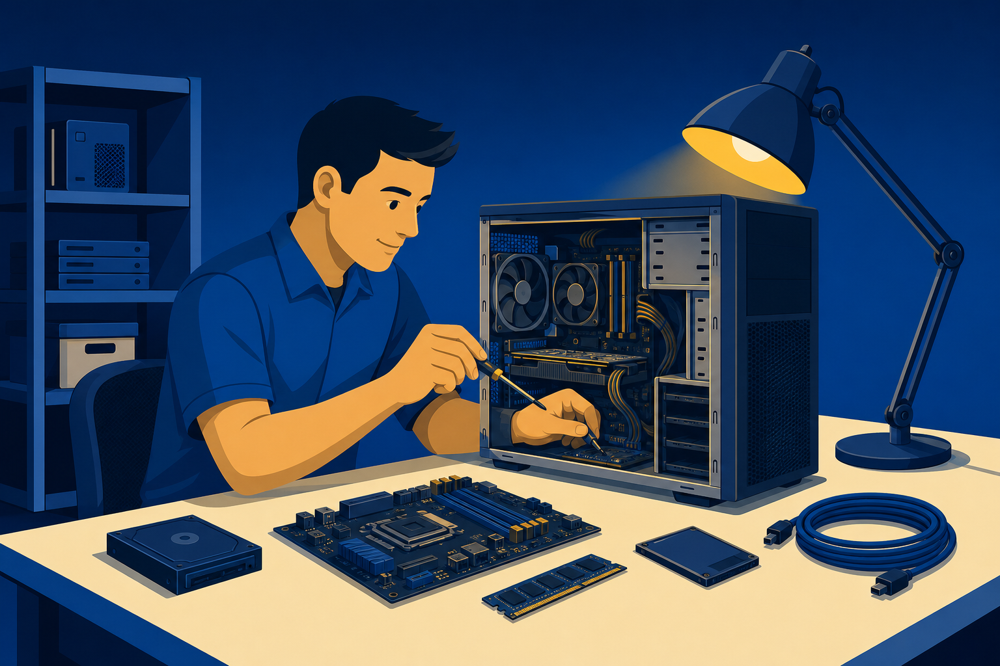
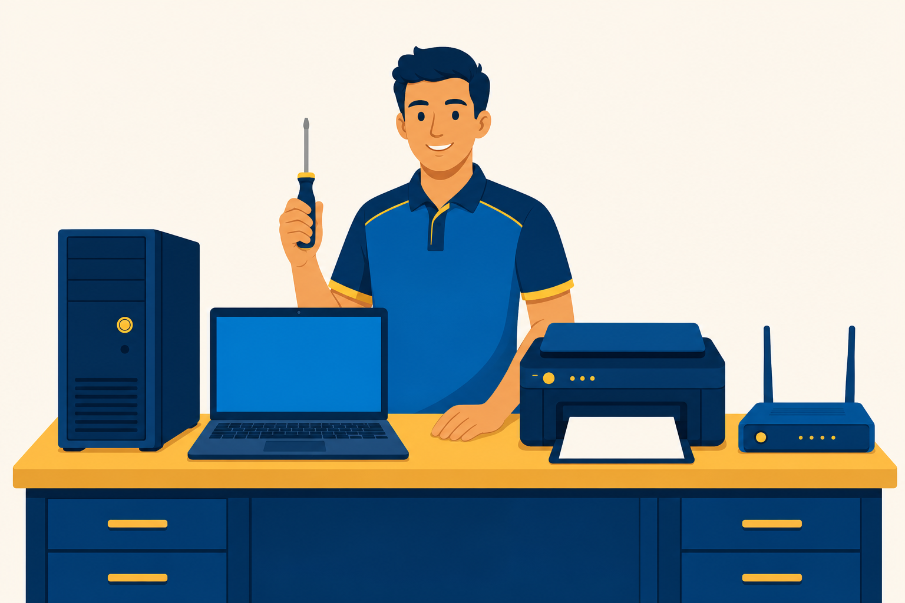
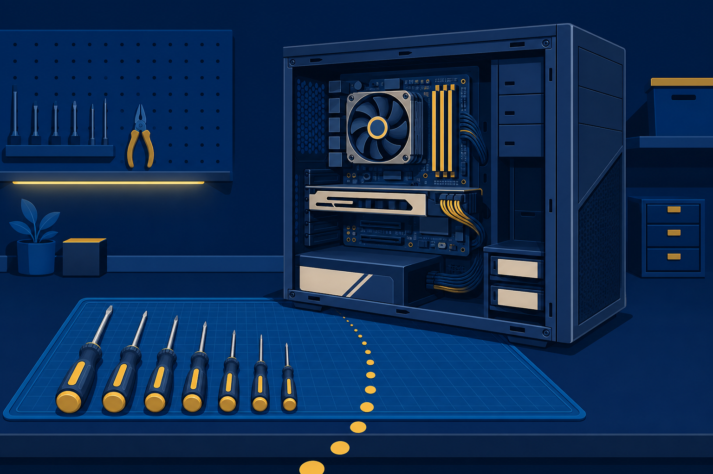

01
Describe
the IT specialist role and why no two workdays repeat.

The IT specialist role, the skills it demands, and the six-step method behind every solved ticket.
Start here: Think of the last time tech broke on you. Who fixed it, and how did they know where to start?
the IT specialist role and why no two workdays repeat.
the transferable skills and knowledge domains the work demands.
the six-step troubleshooting method to one live ticket.
The front desk calls at 8:15 a.m. No image on the screen, and the morning line is growing.
Talk with a partner:
What is the first thing you would do? Grab a screwdriver, reboot the PC, or something else?
An IT specialist keeps people working. Hardware, software, networks, printers, and accounts all land on the same bench.
Range is the job. No two days repeat.

40 students blocked
One user down
Irritating, not blocking
Planned work
Question: The server and the front desk both feel urgent. What makes the server ticket go first?
Follow the same consistent method on every issue. Lesson 1.2 hands you the industry standard.
Turn “SMART failure imminent” into a decision your office manager can act on, in writing and out loud.
A clean bench finds tools faster. Ordered notes become clear updates for the people waiting.
Components you can hold and replace.
Operating systems and the apps on top.
The links that move data between devices.
Services that run off the bench, on demand.
Protection for everything else on this bench.
Nobody masters all five at once. This course builds the first pillar: hardware.
This course
BPC270
Both exams passed
Employers read A+ as proof of baseline skill. Every chapter in this course maps to Core 1 exam objectives.
One ticket rides the entire six-step method for the rest of class. Watch what a professional does differently.
No touching hardware yet.
Gather evidence first.
Rank probable causes.
Prove or cut each theory.
Plan the fix, then apply it.
Confirm full function.
Write it down for the next tech.
CompTIA’s best-practice method. When your company has its own process, company policy wins.
Before you change anything: back up what the desk cannot lose, or verify the user already has.
With a partner: Rank your top two suspects before you peek.
The obvious theory lost. That is the method working, not failing.
#4721: set the input, secure the cable. Parts cost: $0. Chosen.
When repair costs more than the part, stop repairing.
A loaner monitor buys time when the full fix must wait.
Full function, confirmed by the user, plus one measure that blocks the repeat visit.
Six months from now, someone searches “no display after move.” Your notes end that ticket in five minutes.
Amber LED, desk move
Cable first, input second
HDMI 2 wins
$0 repair
Two clean boots
Closed with notes
List the six troubleshooting steps in order.
Why does “question the obvious” come before the screwdriver?
Name three things that belong in the closing documentation.

Next step: Complete the Lesson Review questions in Canvas. Chapter 2 opens the case and gets hands-on with the hardware.